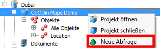
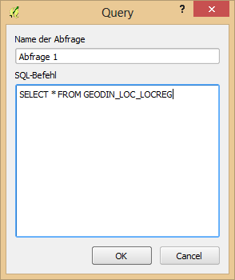
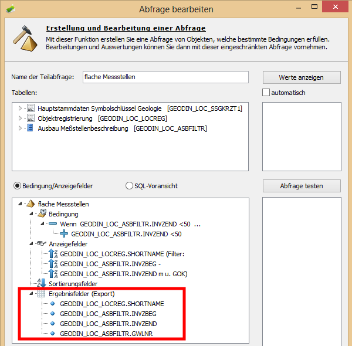
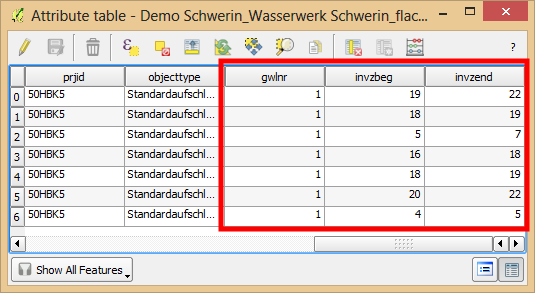
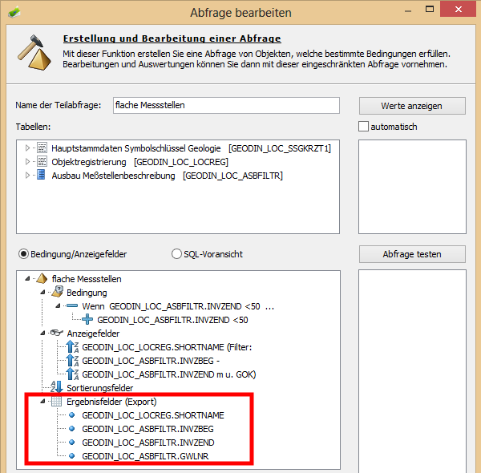
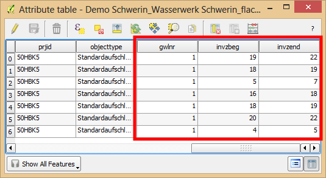

Abfragen
Ein Rechtsklick auf der Projektebene ermöglicht die Erstellung von Abfragen, das Symbol ist eine grüne Pyramide.

Die FROM-Klausel muss dabei per Hand eingegeben werden. Bei komplizierten Abfragen sollte der Text der FROM-Klausel aus GeODin kopiert werden.
 Die Abfrage muss vom Nutzer ausgeführt werden, dazu wird an der Abfrage das Rechtsklickmenü aufgerufen. Anschließend öffnet sich der Objektbaum automatisch und zeigt alle Objekte an, die diese Abfrage erfüllen.
Nutzerabfragen, die in GeODin erstellt worden sind, werden automatisch beim Importieren der Datenbank in QGIS angezeigt. Das Symbol ist eine gelbe Pyramide. Auch diese Abfragen müssen über das Rechtsklickmenü ausgeführt werden.
Da es sich bei Abfragen auch um eine Gruppe von Objekten handelt, können diese, ähnlich wie Objektarten, als Gruppe der Karte in QGIS hinzugeügt werden.
Wenn an der Abfrage in GeODin Ergebnisfelder definiert wurden, werden diese im Hintergrund nach QGIS übertragen. Sie werden der Attributtabelle angefügt, wenn die Objekte als Vektordatei in QGIS dargestellt werden.

Die Abfrage muss vom Nutzer ausgeführt werden, dazu wird an der Abfrage das Rechtsklickmenü aufgerufen. Anschließend öffnet sich der Objektbaum automatisch und zeigt alle Objekte an, die diese Abfrage erfüllen.
Nutzerabfragen, die in GeODin erstellt worden sind, werden automatisch beim Importieren der Datenbank in QGIS angezeigt. Das Symbol ist eine gelbe Pyramide. Auch diese Abfragen müssen über das Rechtsklickmenü ausgeführt werden.
Da es sich bei Abfragen auch um eine Gruppe von Objekten handelt, können diese, ähnlich wie Objektarten, als Gruppe der Karte in QGIS hinzugeügt werden.
Wenn an der Abfrage in GeODin Ergebnisfelder definiert wurden, werden diese im Hintergrund nach QGIS übertragen. Sie werden der Attributtabelle angefügt, wenn die Objekte als Vektordatei in QGIS dargestellt werden.
